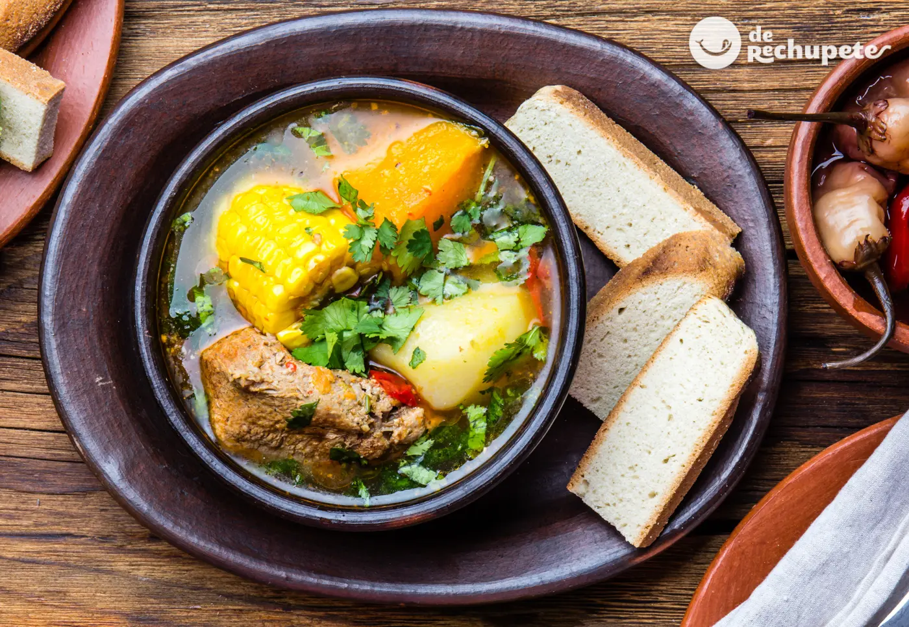
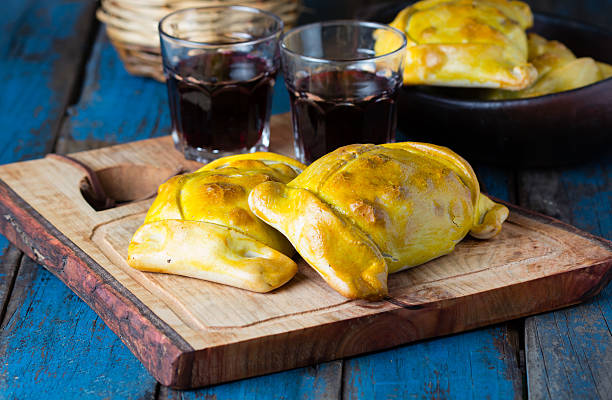

Bienvenidos
En nuestra website - « Recetas Chilenas»- planteamos ya las influencias que han hecho de
nuestro arte culinario, una cocina con ciertos razgos europeizantes y con origenes autóctonos latinoamericanos.
Sin embargo, es auténticamente chilena, tan chilena como el «pebre cucharea'o », o nuestro sin rival «chancho en
piedra », o nuestro exclusivo «curanto con chapaleles.
Aquellos que hayan recorrido por algunos países de esta américa morena, habrán encontrado cosas similares,
pero...¡jamás iguales! De inmediato captamos que el sabor de las verduras no es el mismo sabor de las nuestras.
Nos encontramos con una zanahoria filamentosa, dura, con un sabor que dista mucho de la chilena, dulzona y jugosa.
La papa es distinta, como lo es -en general- el sabor de la gran mayoría de los alimentos. ¿No será, entonces, que
el sabor de nuestros alimentos es lo que hace que nuestras comidas sean tan diferentes y auténticas, que llegan a
ser únicas? Empanadas -con o sin ese nombre- las encontramos en México, Perú, Argentina, y aún en España (La gran
empanada gallega); pero en ninguna parte -cerca o lejos- podrán comer una sabrosa empanada de pino caldúa..¡y de
kilo !, como en el campo chileno.

No olvidemos que el cocimiento de verduras con papas, zapallo, choclo y presas de carne (ya
sea ave, vacuno o cerdo) es propio de los indígenas de américa latina desde hace 3.000 años, época en que se
inició la alfarería. Fue entonces cuando nuestros antepasados pudieron hacer un cazo o cazuela donde poder cocer
las verduras. Pasaron 2.500 años hasta que llegaron los españoles y probaron de este alimento de nombre
impronunciable para ellos, por lo que le llamaron el cocido en cazuela, o simplemente, «cazuela». Ellos la
enriquecieron con verduras y especias de la madre patria, e introdujeron el pavo que trajeron desde México.
¿En qué país de esta américa no se come la cazuela? No lo sé. Pero de algo estoy seguro, y es que en ninguna parte
es tan sabrosa como en Chile.
Me insiste la pregunta: ¿No será el sabor diferente de nuestros alimentos? Tal vez, es posible. Mal que mal, Chile
es uno de los pocos países que goza de características que
mejoran el sabor de los alimentos, como el hecho de tener muy marcadas las 4 estaciones del año, o su temperatura
media, o sus diferencias entre altas y bajas temperaturas (que enriquece el sabor de las uvas y otros frutos), sin
considerar que en nuestro país caben todos los climas del mundo y todos los paisajes. Aunque también es posible
que seamos buenos cocineros por esencia. Es innegable que poseemos Chefs de primerísimo nivel (Si no me lo cree
pregúntele a su esposo, señora), y en gran cantidad.
